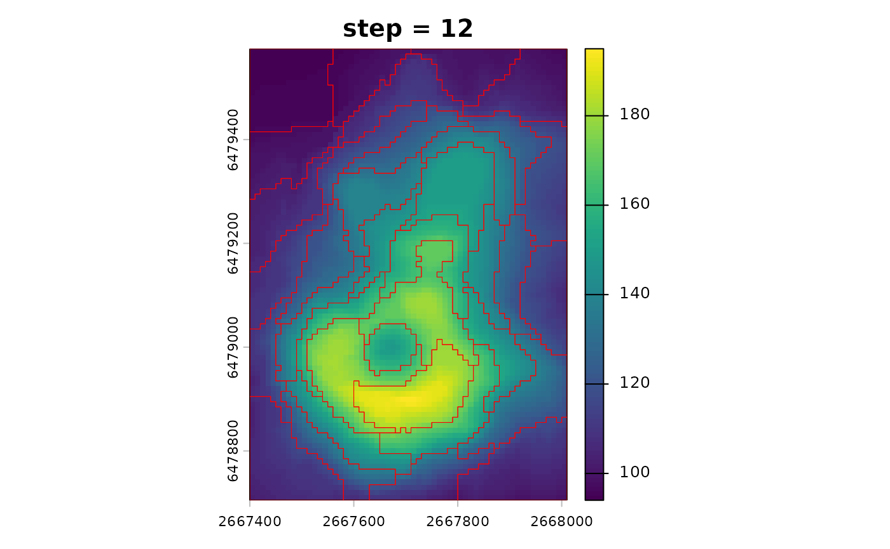
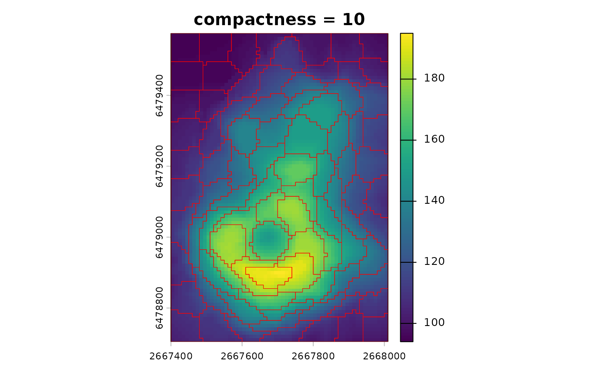
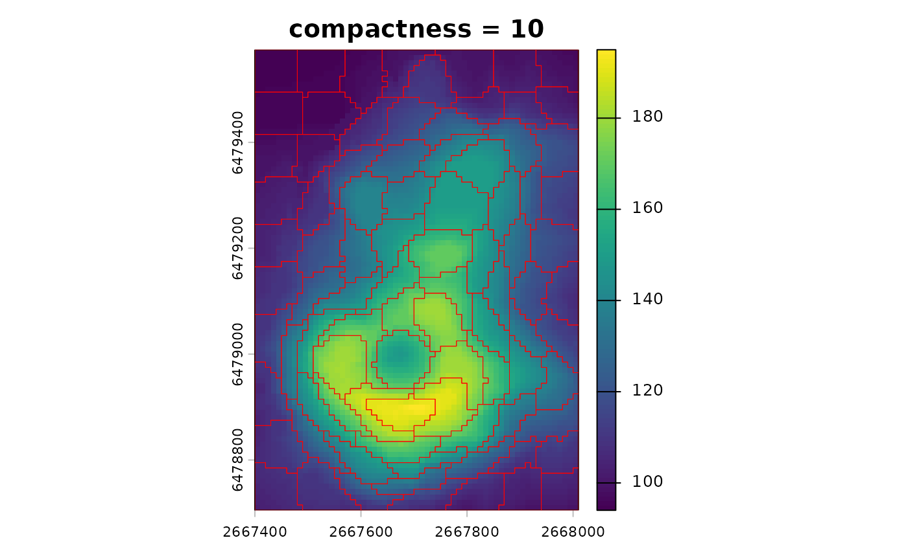

Choosing parameters for supercells
Jakub Nowosad
2026-02-09
Source:vignettes/articles/v2-parameters.Rmd
v2-parameters.RmdThis vignette focuses on how parameters affect the supercell output,
with the main choices being step or k, the
compactness value, and the distance and averaging
functions. The goal is not to find one universal set of parameters, but
to choose values that match your intent.
All examples use the volcano raster for simplicity, but
the same ideas apply to larger and multi-layer rasters.
library(supercells)
library(terra)
vol <- terra::rast(system.file("raster/volcano.tif", package = "supercells"))Supercells algorithm
The supercells algorithm is an iterative process that starts with initial centers and assigns pixels to the nearest center based on a combined distance that incorporates both value similarity and spatial proximity. After the initial assignment, the algorithm updates the centers by averaging the values of the assigned pixels and recalculating the combined distance for the next iteration. This process continues until the specified number of iterations is reached.
In this package, the combined distance follows the standard SLIC form:
where
is the spatial distance in grid-cell units,
is the value-space distance (from dist_fun), and
is the compactness value. When step is
provided as use_meters(...), it is converted to cells
before segmentation; distances are still computed in grid-cell units.
Larger compactness down-weights the value term, making
shapes more regular, while smaller values emphasize value
similarity.
Choosing step or k
You can control the number and size of supercells using either
step or k. step defines the
spacing of initial centers in pixel units (or map units when given as
use_meters(...)). Smaller step values produce
more and smaller supercells, while larger values produce fewer and
larger supercells. For example, step = 8 creates centers
approximately every 8 pixels, which leads to supercells that are roughly
8 by 8 pixels in size, depending on the compactness.
sc_step <- sc_slic(vol, step = 8, compactness = 5)By default, step is in pixel units, but instead we can
also specify it in map units with use_meters(). This allows
us to think about the spatial scales of expected supercells in terms of
the actual map units. For example, if your raster has a resolution of 10
meters, then step = use_meters(200) would create centers
approximately every 200 meters, which corresponds to every 20
pixels.
sc_step_map <- sc_slic(vol, step = use_meters(200), compactness = 5)k specifies the desired number of supercells and the
algorithm chooses an approximate step size. This is convenient when you
want a target number instead of a target spatial scale.
sc_k <- sc_slic(vol, k = 100, compactness = 5)In practice, use step when spatial scale matters, and
use k when you want a fixed count across datasets.
Importantly, both approaches still require a sensible
compactness value.
sc_step_small <- sc_slic(vol, step = 6, compactness = 5)
sc_step_large <- sc_slic(vol, step = 12, compactness = 5)
terra::plot(vol, main = "step = 6")
plot(sc_step_small[0], add = TRUE, border = "red", lwd = 0.5)
terra::plot(vol, main = "step = 12")
plot(sc_step_large[0], add = TRUE, border = "red", lwd = 0.5)
Choosing compactness
compactness controls the tradeoff between spatial
regularity and value similarity: lower values favor value similarity and
may create irregular shapes, while higher values favor more regular
shapes but can mix dissimilar values.
In general, it is hard to predict the best compactness
value without testing, and it depends on many factors including the
range and distribution of values in your raster, the selected distance
function, and the spatial structure of the data.
You can see this tradeoff by comparing two compactness values with the same step.
sc_compact_low <- sc_slic(vol, step = 8, compactness = 1)
sc_compact_high <- sc_slic(vol, step = 8, compactness = 10)
terra::plot(vol, main = "compactness = 1")
plot(sc_compact_low[0], add = TRUE, border = "red", lwd = 0.5)
terra::plot(vol, main = "compactness = 10")
plot(sc_compact_high[0], add = TRUE, border = "red", lwd = 0.5) 

Tuning compactness
The sc_tune_compactness() function estimates a
reasonable starting value from a short run of the algorithm.
It supports two summaries with metric = "global" and
metric = "local". The global version looks at overall
balance between value and spatial distances, while the local version
uses a neighborhood-based value scale. More precisely:
-
Global: runs a short pilot segmentation
(
iter = 1by default), computes pixel-levelspatialandvaluedistances, then takes their medians over pixels. The compactness is estimated ascompactness = (median(value) / value_scale) * step / median(spatial).
This aligns the median value and spatial terms in the combined distance. -
Local: computes, for each center, the mean value
distance within a local
window, then returns the median of those per-center means (after
value_scale).
This yields a compactness tied to local value variability, without explicitly using spatial distances.
The local estimate is often more stable for heterogeneous rasters.
tune_global <- sc_tune_compactness(vol, step = 8, metric = "global")
tune_local <- sc_tune_compactness(vol, step = 8, metric = "local")
tune_global
#> step metric dist_fun compactness
#> 1 8 global euclidean 6.864497
tune_local
#> step metric dist_fun compactness
#> 1 8 local euclidean 9.084872Both results return a one-row data frame with step,
metric, dist_fun, and
compactness. You can plug the suggested value into
sc_slic() by setting compactness to the
estimated value.
sc_tuned <- sc_slic(vol, step = 8, compactness = tune_global$compactness)If your raster has many layers, the value distances can be large. The
value_scale argument controls the scaling of value
distances before the compactness estimate. Global:
compactness = (median(value) / value_scale) * step / median(spatial).
Local:
compactness = median(local_mean_value / value_scale). Use
"auto" (sqrt(nlyr(x))) for Euclidean-like
distances; for bounded/angular distances (e.g., cosine),
value_scale = 1 is often better.
Automatic compactness
For heterogeneous rasters, compactness = use_adaptive()
enables SLIC0-style adaptive compactness. This adjusts the value scale
per supercell and often improves local adaptation. At the same time, it
reduces direct control, so use it when a single global compactness is
hard to choose. Importantly, it still uses your chosen
dist_fun for value distances.
sc_auto <- sc_slic(vol, step = 8, compactness = use_adaptive())
terra::plot(vol, main = "compactness = adaptive")
plot(sc_auto[0], add = TRUE, border = "red", lwd = 0.5)When you compare results, keep in mind that metrics from adaptive
compactness are not directly comparable to fixed-compactness runs. You
can still compare spatial metrics, but value metrics reflect local
scaling when compactness = use_adaptive().
Manual tuning
A parallel approach to deciding on compactness is to run
a small grid of values and compare the global metrics. It allows you to
see the tradeoffs between spatial and value distances across a range of
compactness settings.
cmp_vals <- c(1, 3, 5, 8)
cmp_metrics <- lapply(cmp_vals, function(cmp) {
sc_i <- sc_slic(vol, step = 8, compactness = cmp)
sc_metrics_global(vol, sc_i, scale = TRUE)
})
cmp_metrics <- do.call(rbind, cmp_metrics)
cmp_metrics
#> step compactness adaptive_method n_supercells mean_spatial_dist_scaled
#> 1 8 1 <NA> 90 0.5500066
#> 2 8 3 <NA> 88 0.5246759
#> 3 8 5 <NA> 89 0.4982282
#> 4 8 8 <NA> 88 0.4610799
#> mean_value_dist_scaled mean_combined_dist balance
#> 1 2.1412253 2.3003626 1.1923986
#> 2 0.7473867 0.9994451 0.2193843
#> 3 0.4746065 0.7533578 -0.1505373
#> 4 0.3358298 0.6175536 -0.4145741Distance and averaging functions
The dist_fun argument defines how similarity is measured
in value space. Built-in options include "euclidean",
Jensen–Shannon divergence, and dynamic time warping. You can also pass a
name of the distance measure from the philentropy
package1
or a custom function that takes two numeric vectors and returns a single
number. If you use a custom distance, ensure it returns a single finite
number.
sc_manhattan <- sc_slic(vol, step = 8, compactness = 5, dist_fun = "manhattan")The avg_fun argument controls how values are summarized
within each supercell. The SLIC algorithm iteratively updates supercell
centers based on the average value of the assigned pixels – and with
this argument you can choose how that average is calculated. The default
is "mean", and "median" is an alternative,
often more robust to outliers.
sc_median <- sc_slic(vol, step = 8, compactness = 5, avg_fun = "median")
terra::plot(vol, main = "dist_fun = manhattan")
plot(sf::st_geometry(sc_manhattan), add = TRUE, border = "red", lwd = 0.5)
terra::plot(vol, main = "avg_fun = median")
plot(sf::st_geometry(sc_median), add = TRUE, border = "red", lwd = 0.5)If you change dist_fun or avg_fun, you
should remember to update compactness. Different distances
change the scale of value differences and therefore the balance with the
spatial term.
After tuning, use sc_metrics_pixels(),
sc_metrics_supercells(), or
sc_metrics_global() to compare runs. These functions accept
the raster as x and the supercells as sc, and
they reuse the stored dist_fun when available. See the
evaluation vignette for guidance on interpreting these metrics: https://jakubnowosad.com/supercells/articles/v2-evaluation.html.
Connectivity and minimum size
The clean argument, enabled by default, enforces
connectivity and removes small fragments that may arise during the
iterative process of assigning pixels to supercells. This is usually
desirable for polygon outputs and downstream analyses. The
minarea argument sets a minimum expected size in pixels for
supercells, and smaller supercells are merged into neighbors. By
default, when clean = TRUE, a minimum size is still
enforced internally (about one quarter of the average supercell size),
so small fragments are merged unless you turn off cleaning. If you see
many tiny supercells, increase minarea or
step.
sc_clean <- sc_slic(vol, step = 8, compactness = 5, clean = TRUE, minarea = 20)If you need unpostprocessed supercells for speed or debugging, you
can set clean = FALSE.
Iterations
You can inspect how the algorithm converges over iterations with
sc_slic_convergence(). It returns a data frame with
per-iteration mean distance and has a dedicated plot()
method.
sc_conv <- sc_slic_convergence(vol, step = 8, compactness = 5, iter = 10)
plot(sc_conv)Use the diagnostics to decide whether fewer iterations are
sufficient. If the curves stabilize early, you can reduce
iter to speed up large runs.